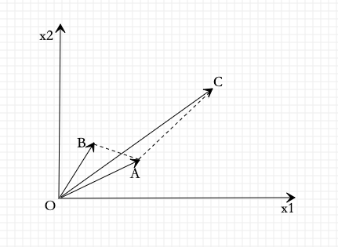
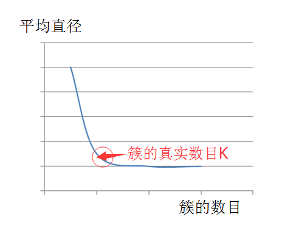

本章介绍两种最常用的聚类算法：层次聚类和k均值聚类。
层次聚类又有聚合(自下而上)和分裂(自上而下)两种方法。聚合法(自下而上)开始将每个样本各自分到一个类；之后将相距最近的两类合并，建立一个新的类，重复此操作直到满足停止条件；得到层次化的类别。分裂法(自上而下)开始将所有样本分到一个类；之后将已有类中相聚最远的样本分到两个新的类，重复此操作直到满足停止条件；得到层次化的类别。
k均值聚类是基于中心的聚类方法，通过迭代，将样本分到k个类中，使得每个样本与其所属类的中心或均值最近；得到k个“平坦的”、非层次化的类别，构成对空间的划分。k均值聚类的算法1967年由MacQueen提出。
聚类的基本概念
本节介绍聚类的基本概念，包括样本之间的距离或相似度，类或簇，类与类之间的距离。
相似度或距离
聚类的对象是观测数据，或样本集合。假设有n个样本，每个样本由m个属性的特征向量组成。样本集合可以用矩阵X表示：
i表示第i个样本，j表示第j个特征。
聚类的核心概念是相似度或距离，有多种相似度或距离的定义。因为相似度直接影响聚类的结果，所以其选择是聚类的根本问题。具体哪种相似度更适合取决于应用问题的特性。
闵可夫斯基距离
在聚类中，可以将样本集合看作是向量空间中点的集合，以该空间的距离表示样本之间的相似度。闵可夫斯基距离(Minkowski distance)越大相似度越小，距离越小相似度越大。
定义14.1 给定样本集合X,X是m维实数向量空间中点的集合，其中，样本与样本的闵可夫斯基距离定义为:
这里。当p=2时，称为欧式距离，即
当p=1时，称为曼哈顿距离(Manhattan distance)，即
当p=时，称为切比雪夫距离(Chebyshev distance)，取各个坐标值差的绝对值的最大值，即
马氏距离
马氏距离(Mahalanobis distance)，也是另一种常用的相似度，考虑各个分量(特征)之间的相关性并与各个分量的尺度无关。马氏距离距离越大相似度越小，距离越小相似度越大。
定义14.2给定一个样本集合X,，其协方差矩阵记作S，样本与样本 之间的马氏距离定义为：
其中，。
当S为单位距离时，即样本数据的各个分量相互独立且各个分量的方差为1时，由式(14-6)知，马氏距离就是欧氏距离，所以马氏距离时欧氏距离的推广。
相关系数
样本之间的相似度也可以用相关系数来表示。相关系数的绝对值越接近于1，表示样本越相近；越接近0，表示样本越不相似。
定义14.3样本与样本之间的相关系数定义为：
其中，。
夹角余弦
样本之间的相似度也可以用cosine来表示。cosine越接近于1，表示样本越相似；越接近于0，表示样本越不相似。
定义14.4 样本与样本之间的cosine定义为
结论
由上述定义看出，用距离度量相似度时，距离越小样本越相似；用相关系数时，相关系数越大样本越相似。注意不同相似度度量得到的结果并不一定一致。请参照图14.1：

从上图可以看出，如果从距离的角度看，A和B比A和C更相似；但从相关系数的角度看，A和C比A和B更相似。所以，进行聚类时，选择合适的距离或相似度非常重要。
类或簇
通过聚类得到的类或簇，本质是样本的子集。
如果一个聚类方法假定一个样本只能属于一个类，或类的交集为空集，那么该方法称为硬聚类方法。
如果一个样本可以属于多个类，或类的交集不为空集，那么该方法称为软聚类方法。
本章只考虑硬聚类方法。
用G表示类或簇，用表示类中的样本，用表示G中样本的个数，用表示样本与样本之间的距离。类或簇有多种定义，下面给出几个常见定义：
定义14.5 设T为给定的正数，若集合G中任意两个样本，有：
则称 G为一个类或簇。
定义14.6 设T为给定的正数，若对集合G的任意样本，一定存在G中的另一个样本，使得
则称G为一个类或簇。
定义14.7设T为给定的正数，若对集合G中任意一个样本，G中的另一个样本满足：
其中为G中样本的个数，则称G为一个类或簇。
定义14.8 设T和V为给定的两个正数，如果集合G中任意两个样本的距离满足：
则称G为一个类或簇。
以上四个定义，第一个定义最常用，并且由他可以推出其它三个定义。
类的特征可以通过不同角度来刻画，常用的特征有下面三种：
类的均值，又称为类的中心
式中是类G的样本个数。
类的直径diameter
类的直径是类中任意两个样本之间的最大距离，即
类的样本散布矩阵(scatter matrix)与样本协方差矩阵
类的样本散布矩阵为
样本协方差矩阵为
其中m为样本的维数(特征个数)。
类与类之间的距离
考虑类与类之间的距离，也称为连接(linkage)。类与类之间的距离也有多种定义。
设类包含个样本，包含个样本，分别用和表示和的均值，即类的中心。
最短距离或单连接
定义类的样本与的样本之间的最短距离为两类之间的距离：
最长距离或完全连接
定义类的样本与的样本之间的最长距离为两类之间的距离：
中心距离
定义类与类的中心与之间的距离为两类之间的距离：
平均距离
定义类与类的任意两个样本之间距离的平均值为两类之间的距离：
层次聚类
层次聚类假设类别之间存在层次结构，将样本聚到层次化的类中。层次聚类又有聚合(agglomerative)或自下而上(bottom-up)聚类、分裂(divisive)或自上而下(top-down)聚类两种方法。它属于硬聚类。
聚合聚类开始将每个样本各自分到一个类；之后将相距最近的两类合并，建立一个新的类，重复此操作直到满足停止条件；得到层次化的类别。
分裂聚类开始将所有样本分到一个类；之后将已有类别中相距最远的样本分到两个新的类，重复此操作直到满足停止条件；得到层次化的类别。
此处只介绍聚合聚类。
聚合聚类需要预先确定三个要素：
距离或相似度
可以是马氏距离、相关系数、cosine等。
合并规则
类间距离最小、类间距离可以是最短距离、最长距离、中心距离等。
停止条件
类的个数达到阈值(极端情况下类的个数为1)、类的直径超过阈值。
如果采用欧氏距离为样本之间距离；类间距离最小为合并规则，其中最短距离为类间距离；类的个数为1，为停止条件：
算法14.1(聚合聚类算法)
输入: n个样本组成的样本集合及样本之间的距离
输出：对样本集合的一个层次化聚类
- 计算n个样本俩俩之间的欧氏距离，记作矩阵。
- 构造n个类，每个类只包含一个样本。
- 合并类间距离最小的两个类，其中最短距离为类间距离，构建一个新类
- 计算新类与当前各类的距离。若类的个数为1，终止计算，否则回到步(3)
聚合层次聚类算法的复杂度为，其中m为样本维度，n是样本个数。
聚合聚类算法代码实现
k均值聚类
k均值聚类是基于样本集合划分的聚类算法。
k均值聚类将样本集合划分为k个子集，构成k个类，将n个样本分到k个类中，每个样本到其所属类的中心的距离最小。它属于硬聚类算法。
模型
给定n个样本的集合，每个样本由一个特征向量表示，特征向量的维度是m。k均值聚类的目标是将n个样本分到k个不同的类或簇中，这里假设k<n。k个类形成对样本集合X的划分，其中。用C表示划分，一个划分对应着一个聚类结果。
划分C是一个多对一的函数。事实上，如果把每个样本用一个整数表示，每个类也用一个整数表示，那么划分或者聚类可以用函数表示，其中。所有k均值聚类的模型是一个从样本到类的函数。
策略
k均值聚类归结为样本集合X的划分，或者从样本到类的函数的选择问题。k均值聚类的策略是通过损失函数的最小化选取最优的划分或函数。
首先，采用欧氏距离平方作为样本之间的距离度量：
然后，定义样本与其所属类的中心之间的距离的总和为损失函数，即
式中是第l个类的均值或中心，，I(C(i)=l)是指示函数，取值为1或0.函数W(C)也称为能量，表示相同类中的样本相似的程度。
应用EM算法，可以引入一个隐变量。那么式(14-19)可写成：
此处的表示样本i属于各个类别的情况:
所有。
k均值聚类就是求解最优化问题：
相似 的样本被聚到同类时，损失函数最小。但是，这是一个组合优化问题，n个样本分到k类，所有可能分法的数目是：
这是np hard问题。使用迭代的方法求解。
算法
k均值聚类的算法是一个迭代的过程，每次迭代包括两个步骤。
首先，选择k个类的中心，将样本逐个指派到与其最近的中心的类中，得到一个聚类结果；
然后，更新每个类的样本的均值，作为类的新的中心；
重复以上步骤，直到收敛为止。
具体过程如下：
首先，对于给定的中心值，求一个划分C，使得目标函数极小化：
求解结果，将每个样本划分到与其距离最近的中心的类中。
就是说，在类中心确定的情况下，将每个样本分到一个类中，使样本和其所属类的中心之间的距离总和最小。
然后，对给定的划分C，再求各个类的中心，使得目标函数极小化:
就是说，在划分确定的情况下，使样本和其所属类的中心之间的距离总和最小。
求解结果，对于每个包含个样本的类，更新其均值：
重复以上两个步骤，直到划分不再改变，得到聚类结果。
算法14.2(k均值聚类算法)
输入：n个样本的集合X
输出：样本集合的聚类
- 初始化。令t=0，随机选择k个样本点作为初始聚类中心。
- 对样本进行聚类。对固定的类中心。其中为类的中心，计算每个样本到类中心的距离，将每个样本划分到与其最近的中心的类中，构成聚类结果。
- 计算新的类中心。对聚类结果，计算当前各个类中的样本的均值，作为新的类中心。
- 如果迭代收敛或符合停止条件，输出。否则，令t=t+1，返回步骤2
k均值聚类算法的复杂度是O(mnk)，其中m是特征维度，n为样本数，k为类别数。
算法特性
总体特点
- 基于划分的聚类方法
- 类别k需事先设定
- 以欧氏距离平方表示样本之间的距离
- 以中心或样本的均值表示类别
- 以样本和所属类的中心之间的距离的总和为最优化的目标函数
- 平坦的、非层次化的
- 迭代算法，不能保证全局最优
收敛性
- 启发式方法
- 不保证全局最优
- 初始中心的选择会直接影响聚类结果
初始中心的选择
- 用层次聚类对样本进行聚类，得到k个类别时停止。然后从每个类中选取一个与中心距离最近的点
类别数k的选择
- 通过聚类结果的质量来选择最优的k值
- 聚类结果的质量可以用类的平均直径来衡量；一般的，类别数变小时，平均直径会增加，类别数变大超过某个值以后，平均直径会不变，而这个值正是最优k值。
- 使用二分查找，快速定位最优k值。
